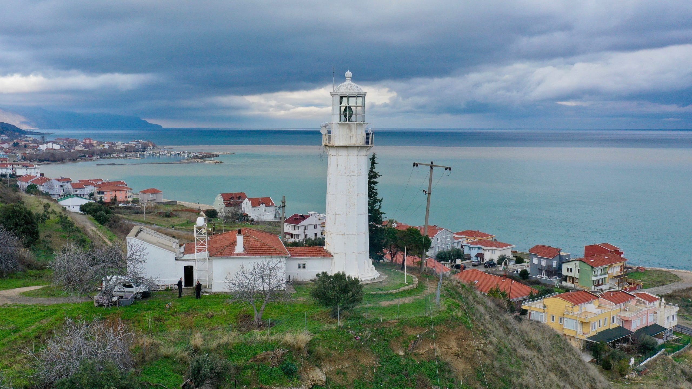
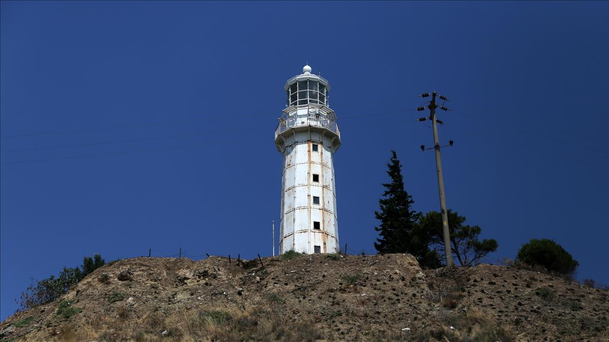

Hora Feneri Hakkında Genel ve Tarihi Bilgiler
Hora Feneri (Hora Burnu Deniz Feneri), Tekirdağ’ın Şarköy ilçesine bağlı Hoşköy Mahallesi'nde yer alır. 1861 yılında Fransızlar tarafından yaptırılan bu tarihi deniz feneri, Marmara Denizi’ni kullanan gemilere yol göstermektedir. Dökme demirden yapılan fener, günümüzde hâlâ aktif olarak çalışmaktadır. 20 metre yüksekliğindeki fener, ışığını yaklaşık 20 deniz milinden görebilmektedir. Aynı zamanda bölge, doğal güzelliği ve manzarası ile ziyaretçilerin ilgisini çeker. Hora Feneri, Tekirdağ’ın önemli tarihi ve turistik yapılarındandır. Sayfanın altında ilgili bazı görselleri bulabilirsiniz.Adres Bilgileri
Adres: Hoşköy Mahallesi Şarköy/TEKİRDAĞ
Hora Feneri ile İlgili Bazı Fotoğraflar
 
Detayli Bilgi
Detaylı Bilgi ve daha fazla fotoğraf için "Türkiye Kültür Portalı" web sayafasına buradan ulaşabilirsiniz.
Sayfama ait bilgiler ve resimler de Türkiye Kültür Portalı web sayfasına aittir.